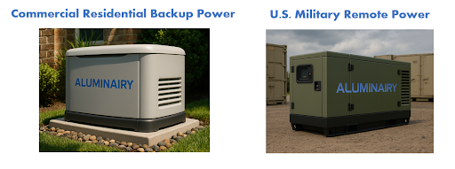

Published by AluminAiry, Knoxville, Tennessee.
Power systems / generators
Aluminum-air generators

Standby and primary power for homes, facilities, and remote military sites. Refueled by swapping aluminum plates instead of recharging or refilling a tank. No combustion, no fuel storage, no downtime.
- Residential and commercial backup
- Hospitals, data centers, telecom, manufacturing
- Military field operations and off-grid sites
- Series-configurable to 12, 24, or 60 volts